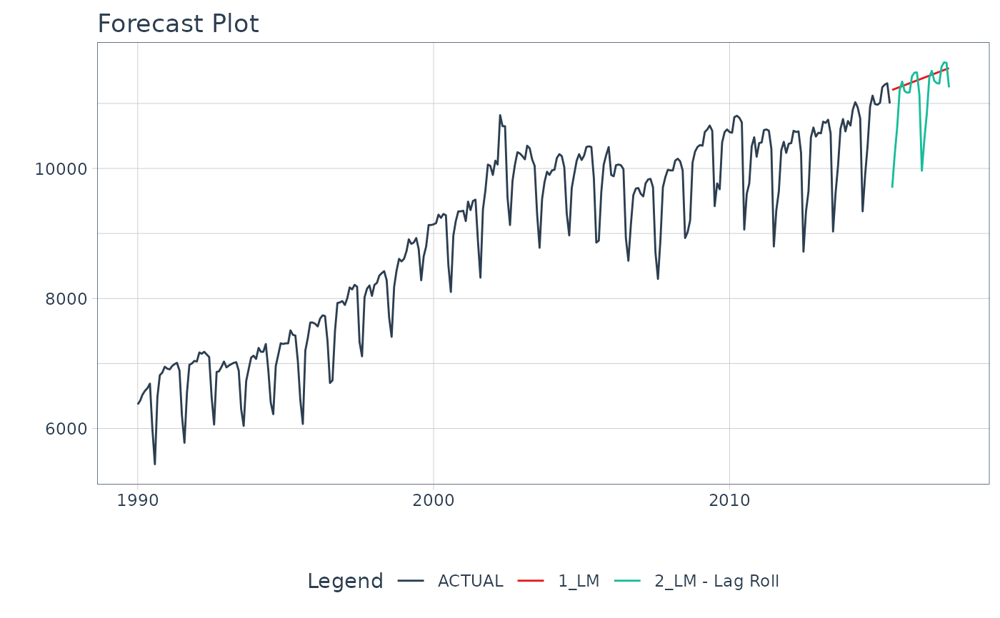
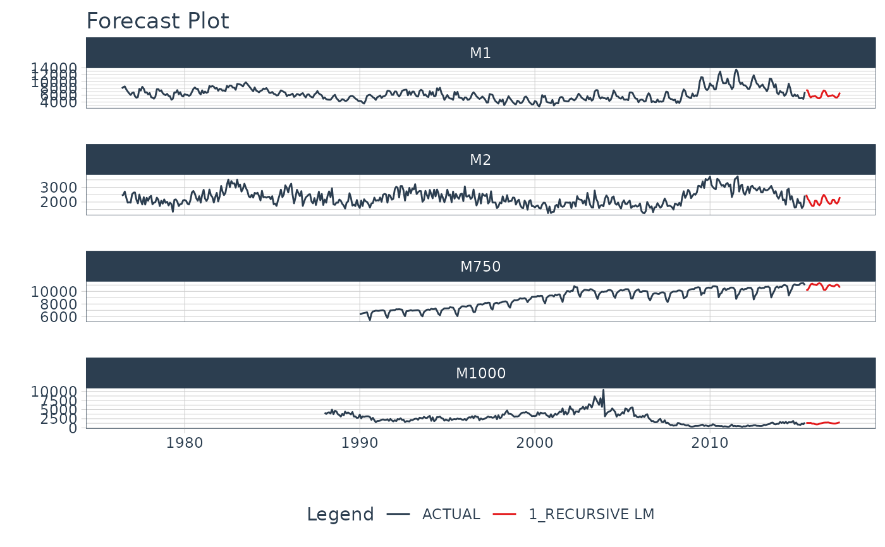

Create a Recursive Time Series Model from a Parsnip or Workflow Regression Model
Source:R/modeltime-recursive.R
recursive.RdCreate a Recursive Time Series Model from a Parsnip or Workflow Regression Model
Arguments
- object
An object of
model_fitor a fittedworkflowclass- transform
A transformation performed on
new_dataafter each step of recursive algorithm.Transformation Function: Must have one argument
data(see examples)
- train_tail
A tibble with tail of training data set. In most cases it'll be required to create some variables based on dependent variable.
- id
(Optional) An identifier that can be provided to perform a panel forecast. A single quoted column name (e.g.
id = "id").- ...
Not currently used.
Details
What is a Recursive Model?
A recursive model uses predictions to generate new values for independent features. These features are typically lags used in autoregressive models. It's important to understand that a recursive model is only needed when the Lag Size < Forecast Horizon.
Why is Recursive needed for Autoregressive Models with Lag Size < Forecast Horizon?
When the lag length is less than the forecast horizon,
a problem exists were missing values (NA) are
generated in the future data. A solution that recursive() implements
is to iteratively fill these missing values in with values generated
from predictions.
Recursive Process
When producing forecast, the following steps are performed:
Computing forecast for first row of new data. The first row cannot contain NA in any required column.
Filling i-th place of the dependent variable column with already computed forecast.
Computing missing features for next step, based on already calculated prediction. These features are computed with on a tibble object made from binded
train_tail(i.e. tail of training data set) andnew_data(which is an argument of predict function).Jumping into point 2., and repeating rest of steps till the for-loop is ended.
Recursion for Panel Data
Panel data is time series data with multiple groups identified by an ID column.
The recursive() function can be used for Panel Data with the following modifications:
Supply an
idcolumn as a quoted column nameReplace
tail()withpanel_tail()to use tails for each time series group.
See also
panel_tail()- Used to generate tails for multiple time series groups.
Examples
# \donttest{
# Libraries & Setup ----
library(modeltime)
library(tidymodels)
library(tidyverse)
library(lubridate)
library(timetk)
library(slider)
# ---- SINGLE TIME SERIES (NON-PANEL) -----
m750
#> # A tibble: 306 × 3
#> id date value
#> <fct> <date> <dbl>
#> 1 M750 1990-01-01 6370
#> 2 M750 1990-02-01 6430
#> 3 M750 1990-03-01 6520
#> 4 M750 1990-04-01 6580
#> 5 M750 1990-05-01 6620
#> 6 M750 1990-06-01 6690
#> 7 M750 1990-07-01 6000
#> 8 M750 1990-08-01 5450
#> 9 M750 1990-09-01 6480
#> 10 M750 1990-10-01 6820
#> # … with 296 more rows
FORECAST_HORIZON <- 24
m750_extended <- m750 %>%
group_by(id) %>%
future_frame(
.length_out = FORECAST_HORIZON,
.bind_data = TRUE
) %>%
ungroup()
#> .date_var is missing. Using: date
# TRANSFORM FUNCTION ----
# - Function runs recursively that updates the forecasted dataset
lag_roll_transformer <- function(data){
data %>%
# Lags
tk_augment_lags(value, .lags = 1:12) %>%
# Rolling Features
mutate(rolling_mean_12 = lag(slide_dbl(
value, .f = mean, .before = 12, .complete = FALSE
), 1))
}
# Data Preparation
m750_rolling <- m750_extended %>%
lag_roll_transformer() %>%
select(-id)
train_data <- m750_rolling %>%
drop_na()
future_data <- m750_rolling %>%
filter(is.na(value))
# Modeling
# Straight-Line Forecast
model_fit_lm <- linear_reg() %>%
set_engine("lm") %>%
# Use only date feature as regressor
fit(value ~ date, data = train_data)
# Autoregressive Forecast
model_fit_lm_recursive <- linear_reg() %>%
set_engine("lm") %>%
# Use date plus all lagged features
fit(value ~ ., data = train_data) %>%
# Add recursive() w/ transformer and train_tail
recursive(
transform = lag_roll_transformer,
train_tail = tail(train_data, FORECAST_HORIZON)
)
model_fit_lm_recursive
#> Recursive [parsnip model]
#>
#> parsnip model object
#>
#> Fit time: 2ms
#>
#> Call:
#> stats::lm(formula = value ~ ., data = data)
#>
#> Coefficients:
#> (Intercept) date value_lag1 value_lag2
#> 147.32008 0.01273 1.59298 0.76666
#> value_lag3 value_lag4 value_lag5 value_lag6
#> 0.73081 0.76950 0.76871 0.74755
#> value_lag7 value_lag8 value_lag9 value_lag10
#> 0.77872 0.72985 0.75257 0.76582
#> value_lag11 value_lag12 rolling_mean_12
#> 0.79979 1.62469 -9.85822
#>
# Forecasting
modeltime_table(
model_fit_lm,
model_fit_lm_recursive
) %>%
update_model_description(2, "LM - Lag Roll") %>%
modeltime_forecast(
new_data = future_data,
actual_data = m750
) %>%
plot_modeltime_forecast(
.interactive = FALSE,
.conf_interval_show = FALSE
)

# MULTIPLE TIME SERIES (PANEL DATA) -----
m4_monthly
#> # A tibble: 1,574 × 3
#> id date value
#> <fct> <date> <dbl>
#> 1 M1 1976-06-01 8000
#> 2 M1 1976-07-01 8350
#> 3 M1 1976-08-01 8570
#> 4 M1 1976-09-01 7700
#> 5 M1 1976-10-01 7080
#> 6 M1 1976-11-01 6520
#> 7 M1 1976-12-01 6070
#> 8 M1 1977-01-01 6650
#> 9 M1 1977-02-01 6830
#> 10 M1 1977-03-01 5710
#> # … with 1,564 more rows
FORECAST_HORIZON <- 24
m4_extended <- m4_monthly %>%
group_by(id) %>%
future_frame(
.length_out = FORECAST_HORIZON,
.bind_data = TRUE
) %>%
ungroup()
#> .date_var is missing. Using: date
# TRANSFORM FUNCTION ----
# - NOTE - We create lags by group
lag_transformer_grouped <- function(data){
data %>%
group_by(id) %>%
tk_augment_lags(value, .lags = 1:FORECAST_HORIZON) %>%
ungroup()
}
m4_lags <- m4_extended %>%
lag_transformer_grouped()
train_data <- m4_lags %>%
drop_na()
future_data <- m4_lags %>%
filter(is.na(value))
# Modeling Autoregressive Panel Data
model_fit_lm_recursive <- linear_reg() %>%
set_engine("lm") %>%
fit(value ~ ., data = train_data) %>%
recursive(
id = "id", # We add an id = "id" to specify the groups
transform = lag_transformer_grouped,
# We use panel_tail() to grab tail by groups
train_tail = panel_tail(train_data, id, FORECAST_HORIZON)
)
modeltime_table(
model_fit_lm_recursive
) %>%
modeltime_forecast(
new_data = future_data,
actual_data = m4_monthly,
keep_data = TRUE
) %>%
group_by(id) %>%
plot_modeltime_forecast(
.interactive = FALSE,
.conf_interval_show = FALSE
)

# }